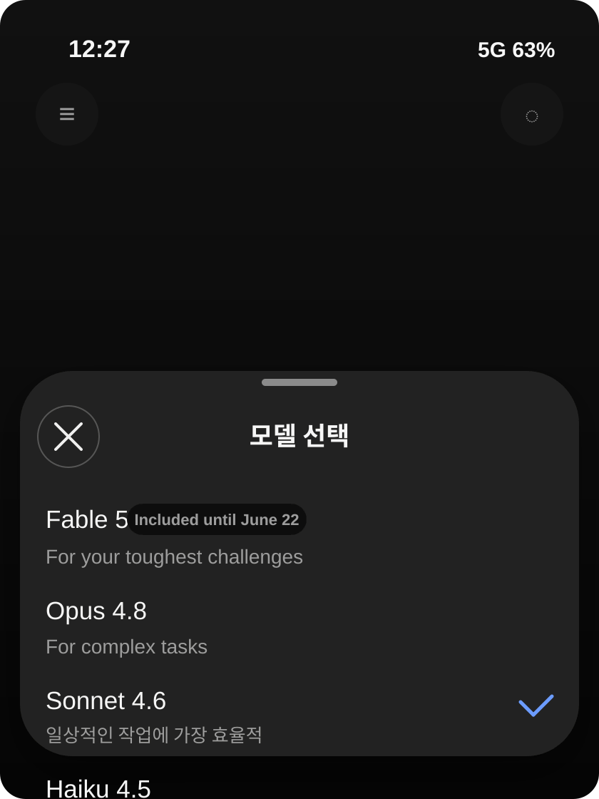

?ㅻ뒛 Claude 紐⑤뜽 ?좏깮李쎌뿉 Fable 5媛 蹂댁씠湲??쒖옉?덈떎
?ㅻ뒛 ?뺤씤??Claude ?깆쓽 紐⑤뜽 ?좏깮 ?붾㈃?먮뒗 Fable 5媛 ?덈줈 ?쒖떆?섍퀬 ?덉뒿?덈떎. ?ㅻ쭔 ?닿쾬???쏮ythos 5媛 ?꾩쟾???쇰컲 怨듦컻?먮떎?앸줈 ?댄빐?섎㈃ 議곌툑 ?꾪뿕?⑸땲?? 怨듭떇 諛쒗몴? 二쇱슂 蹂대룄瑜??④퍡 蹂대㈃, ?쇰컲 ?ъ슜?먭? 諛붾줈 ?곕뒗 紐⑤뜽? ?덉쟾?μ튂媛 遺숈? Fable 5?닿퀬, Mythos 5???쇰? ?좊ː ?묎렐 ??곸뿉寃뚮쭔 ?쒗븳?곸쑝濡??대━??援ъ“?낅땲?? ??湲? 4,000?먭툒?쇰줈 ?붾㈃ 蹂?? 怨듭떇 諛쒗몴, 愿??蹂대룄瑜? ?④퍡 ?뺣━??湲?낅땲??

Official Source
Anthropic 怨듭떇 諛쒗몴
?붾㈃??蹂댁씠??蹂?? Fable 5媛 紐⑤뜽 紐⑸줉???щ씪?붾떎
?ъ슜?먭? 蹂대궡以 ?붾㈃?먯꽌 媛??癒쇱? 蹂댁씠??蹂?붾뒗 紐⑤뜽 ?좏깮李?留??꾩뿉 Fable 5媛 ?깆옣?덈떎???먯엯?덈떎. 湲곗〈?먮뒗 Opus, Sonnet, Haiku 怨꾩뿴???듭닕???좏깮吏?吏留? ?대쾲 ?붾㈃?먯꽌??Fable 5媛 媛???꾩뿉 ?볦씠怨??쏧ncluded until June 22?앸씪??臾멸뎄媛 遺숈뼱 ?덉뒿?덈떎. ??臾멸뎄???대쾲 怨듦컻媛 臾닿린??臾대즺 ?ы븿?대씪湲곕낫?? ?쇱젙 湲곌컙 ?숈븞 Pro, Max, Team, seat-based Enterprise ?뚮옖???ы븿?섎뒗 ?뺥깭?쇰뒗 怨듭떇 諛쒗몴? 留욌Ъ由쎈땲?? Anthropic? 2026??6??22?쇨퉴吏???대떦 ?뚮옖?먯꽌 異붽? 鍮꾩슜 ?놁씠 Fable 5瑜??쒓났?섍퀬, 6??23?쇰??곕뒗 ?ъ슜???щ젅?㏃씠 ?꾩슂?섎떎怨??덈궡?덉뒿?덈떎.
洹몃옒???ㅻ뒛???듭떖? ?쒖깉 紐⑤뜽???ㅼ젣 ?ъ슜???붾㈃??蹂댁씠湲??쒖옉?덈떎?앸뒗 寃껋엯?덈떎. ?⑥닚??釉붾줈洹?諛쒗몴留??섏삩 ?④퀎媛 ?꾨땲?? Claude ???덉뿉??紐⑤뜽 ?좏깮吏濡??몄텧?섍퀬 ?덈떎???먯씠 以묒슂?⑸땲?? ?ㅻ쭔 ?붾㈃?곸뿉???좏깮 泥댄겕媛 Sonnet 4.6???⑥븘 ?덈뒗 寃껋쿂?? 紐⑤뱺 ?ъ슜?먭? ?먮룞?쇰줈 Fable 5瑜?湲곕낯 紐⑤뜽濡??곕뒗 寃껋? ?꾨땺 ???덉뒿?덈떎. ?ъ슜?먮뒗 吏곸젒 紐⑤뜽???좏깮?댁빞 ?섍퀬, 怨꾩젙 ?뚮옖怨? 吏?? 諛고룷 ?쒖꽌, ??踰꾩쟾???곕씪 ?몄텧 ?쒖젏???ㅻ? 媛?μ꽦???덉뒿?덈떎.
Fable 5??Mythos 5???쇰컲 怨듦컻?먯뿉 媛源앸떎
怨듭떇 諛쒗몴瑜?湲곗??쇰줈 蹂대㈃ Fable 5? Mythos 5???꾩쟾???ㅻⅨ 怨꾩뿴??紐⑤뜽?대씪湲곕낫??媛숈? 湲곕컲 紐⑤뜽???쒕줈 ?ㅻⅨ 諛⑹떇?쇰줈 ?쒓났?섎뒗 援ъ“??媛源앹뒿?덈떎. Anthropic? Fable 5瑜??쇰컲 ?ъ슜?먯뿉寃??볤쾶 ?쒓났?섎뒗 Mythos湲?紐⑤뜽濡??ㅻ챸?⑸땲?? ?듭떖? ?쏮ythos湲??깅뒫?? ?볤쾶 ?대릺, ?꾪뿕???곸뿭?먮뒗 ?덉쟾?μ튂瑜?遺숈씤?ㅲ앸뒗 ?먯엯?덈떎. 諛섎?濡?Mythos 5??媛숈? 湲곕컲 紐⑤뜽?먯꽌 ?쇰? ?덉쟾?μ튂媛 ?댁젣???뺥깭濡? Project Glasswing 李몄뿬 湲곌?怨??쇰? ?좊ː ?묎렐 ??곸뿉寃??쒗븳?곸쑝濡??쒓났?⑸땲??
?곕씪???ъ슜?먭? 留먰븳 寃껋쿂???쒖셿?꾪븳 踰꾩쟾? ?꾨땶 寃?媛숇떎?앸뒗 ?먮떒? 苑??뺥솗?⑸땲?? ?쇰컲 ?ъ슜???붾㈃??蹂댁씠??寃껋? Fable 5?닿퀬, ??紐⑤뜽? 怨듦컻???덉쟾?μ튂媛 ?곸슜??踰꾩쟾?낅땲?? Mythos 5 ?먯껜媛 ?쇰컲 ?ъ슜???꾩껜?먭쾶 ?대┛ 寃껋? ?꾨떃?덈떎. Wired?????먯쓣 媛뺤“?덉뒿?덈떎. Claude Mythos 5???좊ː??議곗쭅怨??쇰? ?곌뎄?먯뿉寃??쒗븳?곸쑝濡??쒓났?섍퀬, ?쇰컲 ?ъ슜?먮뒗 ?덉쟾?μ튂媛 ?ㅼ뼱媛?Fable 5瑜? ?곕뒗 援ъ“?쇰뒗 ?ㅻ챸?낅땲??
?ㅼ떆 留먰빐 Mythos 5媛 ?꾩쟾???쇰컲 怨듦컻??寃껋? ?꾨떃?덈떎. ?ㅻ뒛 ?ъ슜?먭? Claude ?깆뿉???뺤씤??蹂?붾뒗 Mythos 5???꾨㈃ 媛쒕갑???꾨땲?? Mythos湲?湲곕컲 紐⑤뜽???덉쟾?μ튂媛 ?곸슜??Fable 5?쇰뒗 ?대쫫?쇰줈 ???볤쾶 ?쒓났?섍린 ?쒖옉?덈떎???좏샇濡?蹂대뒗 ?몄씠 ?뺥솗?⑸땲??
???덉쟾?μ튂媛 ?대젃寃??ш쾶 ?ㅻ쨪吏?붽?
?대쾲 諛쒗몴?먯꽌 媛??以묒슂???⑥뼱???깅뒫蹂대떎 ?덉쟾?μ튂?????덉뒿?덈떎. Anthropic? Fable 5媛 ?뚰봽?몄썾???붿??덉뼱留? 吏???낅Т, 鍮꾩쟾, 怨쇳븰 ?곌뎄 ?깆뿉???먯궗 怨듦컻 紐⑤뜽 以?留ㅼ슦 ?믪? ?깅뒫??蹂댁씤?ㅺ퀬 ?ㅻ챸?⑸땲?? ?섏?留??숈떆???ъ씠踰꾨낫?? ?앸Ъ쨌?뷀븰, 紐⑤뜽 利앸쪟泥섎읆 ?ㅼ슜 媛?μ꽦?????쇰? ?붿껌?먯꽌??Fable 5媛 吏곸젒 ?듯븯吏 ?딄퀬 Claude Opus 4.8濡?fallback?섎룄濡??ㅺ퀎?덈떎怨?諛앺삍?듬땲?? ?ш린??fallback? ?ъ슜?먭? Fable 5瑜?怨⑤옄?붾씪?? ?뱀젙 ?꾪뿕 ?붿껌? ??蹂댁닔?곸씤 紐⑤뜽?????泥섎━?쒕떎???살엯?덈떎.
The Verge 蹂대룄???곕Ⅴ硫?Anthropic? ?뚯뒪?몄뿉??Fable ?몄뀡??95%??Opus 4.8濡??섏뼱媛吏 ?딄퀬 Fable 5媛 洹몃?濡??묐떟?덈떎怨? ?ㅻ챸?덉뒿?덈떎. 利??遺遺꾩쓽 ?됰쾾???낅Т, 湲?곌린, 肄붾뵫, 遺꾩꽍 ?묒뾽?먯꽌???ъ슜?먭? Fable 5???깅뒫??洹몃?濡?泥닿컧??媛?μ꽦???믪뒿?덈떎. ?섏?留?怨좎쐞???곸뿭?먯꽌??classifier媛 ?붿껌??遺꾨쪟?섍퀬, ?꾩슂?섎㈃ ???쒗븳?곸씤 紐⑤뜽濡??섍퉩?덈떎. ?닿쾬? ?ъ슜?깆뿉???쎄컙??遺덊렪?? 留뚮뱾 ???덉?留? Anthropic ?낆옣?먯꽌??Mythos湲?紐⑤뜽???쇰컲 ?ъ슜?먯뿉寃??닿린 ?꾪븳 理쒖냼?쒖쓽 ?μ튂濡?蹂대뒗 ??빀?덈떎.
| 援щ텇 | ?섎? |
|---|---|
| Fable 5 | ?쇰컲 ?ъ슜?먯뿉寃?怨듦컻?섎뒗 Mythos湲?紐⑤뜽. ?덉쟾?μ튂? fallback???곸슜?⑸땲?? |
| Mythos 5 | ?쇰? ?덉쟾?μ튂媛 ?댁젣???쒗븳 ?묎렐 紐⑤뜽. Project Glasswing怨??좊ː ?묎렐 ???以묒떖?낅땲?? |
| Opus 4.8 fallback | 誘쇨컧???ъ씠踰꾨낫?? ?앸Ъ쨌?뷀븰, distillation ?붿껌????蹂댁닔?곸쑝濡?泥섎━?섎뒗 ?고쉶 寃쎈줈?낅땲?? |
| Included until June 22 | ?쇰? ?좊즺 ?뚮옖?먯꽌 2026??6??22?쇨퉴吏 ?ы븿 ?쒓났. 6??23?쇰??곕뒗 ?ъ슜???щ젅?㏃씠 ?꾩슂?⑸땲?? |
媛寃⑷낵 ?쒓났 諛⑹떇??以묒슂?섎떎
API 湲곗? 媛寃⑸룄 怨듦컻?먯뒿?덈떎. Fable 5? Mythos 5???낅젰 100留??좏겙??10?щ윭, 異쒕젰 100留??좏겙??50?щ윭?낅땲?? The Verge???? 媛寃⑹씠 Claude Opus 4.8蹂대떎 ?믪?留? 湲곗〈 Mythos Preview ?꾨줈洹몃옩蹂대떎????? ?섏??대씪怨??뺣━?덉뒿?덈떎. Business Insider ??떆 ?대쾲 怨듦컻瑜??쒓컯?ν븳 紐⑤뜽???볤쾶 ?쒓났?섎릺, ?덉쟾?μ튂? ?쒓났 湲곌컙???④퍡 嫄?怨듦컻?앸줈 ?ㅻ챸?덉뒿?덈떎.
?ъ슜?먭? 蹂대궡以 ?붾㈃???쏧ncluded until June 22?앷? 諛붾줈 ??吏?먭낵 ?곌껐?⑸땲?? 泥섏쓬 硫곗튌 ?숈븞? 留롮? ?ъ슜?먯뿉寃?鍮좊Ⅴ寃?寃쏀뿕?섍쾶 ?섎릺, ?댄썑?먮뒗 ?ъ슜???щ젅??泥닿퀎濡??대룞?????덈떎???섎??낅땲?? Anthropic 履??몄궗??X?먯꽌 珥덇린 諛고룷媛 議곌툑 ?щ컯?????덇퀬, ??留롮? ?щ엺?먭쾶 鍮⑤━ ?쒓났?섎젮???섎룄媛 ?덉뿀?ㅺ퀬 ?ㅻ챸??寃껋쑝濡?蹂대룄?먯뒿?덈떎. 利??ㅻ뒛 ?붾㈃??蹂댁씠??Fable 5???쒖젙?앹쑝濡? ?щ씪???좏깮吏?앹씠吏留? 怨쇨툑怨??쒓났 踰붿쐞???꾩쭅 珥덇린 諛고룷 ?뺤콉???곹뼢??諛쏅뒗?ㅺ퀬 蹂대뒗 ?몄씠 ?덉쟾?⑸땲??
愿??蹂대룄??臾댁뾿??媛뺤“?덈굹
愿??蹂대룄瑜?媛숈씠 蹂대㈃ ?대쾲 怨듦컻???깃꺽????遺꾨챸?댁쭛?덈떎. Anthropic 怨듭떇 諛쒗몴??紐⑤뜽 援ъ“, ?덉쟾?μ튂, 媛寃? ?쒓났 ??곸쓣 ?ㅻ챸?⑸땲?? The Verge???쏛nthropic??泥섏쓬?쇰줈 Mythos湲?紐⑤뜽???볤쾶 怨듦컻?덈떎?앸뒗 ?댁뒪 媛移섏뿉 珥덉젏??留욎톬?듬땲?? Wired?? ?ъ씠踰꾨낫???λ젰怨??좊ː ?묎렐, 洹몃━怨??쇰컲 ?ъ슜?먯뿉寃??쒓났?섎뒗 Fable 5???쒗븳 援ъ“瑜???媛뺥븯寃??ㅻ쨾?듬땲?? Business Insider?? ??怨듦컻媛 Anthropic??IPO ?먮쫫, 寃쎌웳 援щ룄, 湲곗뾽 怨좉컼 諛섏쓳怨??곌껐?쒕떎???먯쓣 ?㏓텤??듬땲??
?ш린??以묒슂??寃껋? 蹂대룄?ㅼ씠 怨듯넻?곸쑝濡??쏮ythos 5媛 紐⑤몢?먭쾶 ?대┛ 寃꺿앹씠?쇨퀬 留먰븯吏 ?딅뒗?ㅻ뒗 ?먯엯?덈떎. ?ㅽ엳???쇰컲 怨듦컻? ?쒗븳 怨듦컻媛 遺꾨━?섏뼱 ?덉뒿?덈떎. ?쇰컲 ?ъ슜?먮뒗 Fable 5瑜??듯빐 Mythos湲??λ젰???쇰?瑜?寃쏀뿕?섍퀬, ???꾪뿕???λ젰? 蹂댁닔?곸쑝濡?留됯굅?? Opus 4.8濡??섍퉩?덈떎. 諛섎㈃ Mythos 5???ъ씠踰?諛⑹뼱?? ?명봽???쒓났?? ?쇰? ?곌뎄?먯쿂??梨낆엫怨?紐⑹쟻??遺꾨챸????곸뿉寃?癒쇱? ?쒓났?⑸땲?? ?대윴 援ъ“???욎쑝濡?媛뺣젰??AI 紐⑤뜽??怨듦컻????諛섎났??媛?μ꽦???쎈땲??
?ъ슜???낆옣?먯꽌 臾댁뾿???대낫硫?醫뗭쓣源?/h2>
吏湲??뱀옣 ?대낵 留뚰븳 寃껋? ??媛吏?낅땲?? 泥レ㎏, 湲?肄붾뵫 ?묒뾽?대굹 蹂듭옟??臾몄꽌 遺꾩꽍泥섎읆 Sonnet 4.6蹂대떎 ??媛뺥븳 異붾줎???꾩슂???묒뾽?? Fable 5??留↔꺼蹂대뒗 寃껋엯?덈떎. Anthropic? 湲??묒뾽怨?蹂듭옟???묒뾽?쇱닔濡?Fable 5??李⑥씠媛 而ㅼ쭊?ㅺ퀬 ?ㅻ챸?⑸땲?? ?섏㎏, 媛숈? ?꾨＼?꾪듃瑜? Sonnet 4.6, Opus 4.8, Fable 5??媛곴컖 ?ｌ뼱蹂닿퀬 寃곌낵??李⑥씠瑜?鍮꾧탳?대낫??寃껋엯?덈떎. ?⑥닚 吏덉쓽?묐떟?먯꽌??李⑥씠媛 ??蹂댁씪 ???덉?留? ?щ윭 ?뚯씪????뒗 肄붾뱶 ?ㅺ퀎, 湲?蹂닿퀬???뺣━, ?ㅻ쪟 ?먯씤 遺꾩꽍, ?ㅻ떒怨?怨꾪쉷 ?섎┰?먯꽌??李⑥씠媛 ?????쒕윭??媛?μ꽦???덉뒿?덈떎.
?ㅻ쭔 誘쇨컧??蹂댁븞 ?붿껌???쇰????고쉶?섎젮怨??뚯뒪?명븯??諛⑹떇? 異붿쿇?섏? ?딆뒿?덈떎. ?대쾲 紐⑤뜽???듭떖 ?쇱젏??諛붾줈 ?덉쟾?μ튂? ?ㅼ슜 諛⑹??닿린 ?뚮Ц?낅땲?? 釉붾줈洹??댁쁺 愿?먯뿉?쒕뒗 Fable 5瑜??쒕Т議곌굔 ???묐삊??紐⑤뜽?앸줈留??뚭컻?섍린蹂대떎, ?쒓컯?ν븳 紐⑤뜽???쇰컲 ?ъ슜?먯뿉寃? ?닿린 ?꾪빐 ?대뼡 ?쒗븳 ?μ튂瑜?遺숈??붽??앷퉴吏 ?④퍡 ?ㅻ챸?섎뒗 寃껋씠 醫뗭뒿?덈떎. 洹몃옒???⑥닚 ?좊え???뚭컻媛 ?꾨땲?? AI 紐⑤뜽 怨듦컻 諛⑹떇?? 諛붾뚭퀬 ?덈떎???먮쫫源뚯? 蹂댁뿬以????덉뒿?덈떎.
?뺣━: ?ㅻ뒛 怨듦컻???뺥솗???섎?
?ㅻ뒛 ?뺤씤???붾㈃? 苑?以묒슂??蹂?붿엯?덈떎. Claude ?ъ슜???붾㈃??Fable 5媛 ?ㅼ젣 ?좏깮吏濡?蹂댁씠湲??쒖옉?덇퀬, ?대뒗 Anthropic?? Mythos湲??깅뒫?????볦? ?ъ슜?먯뿉寃??닿린 ?쒖옉?덈떎???좏샇?낅땲?? ?섏?留??숈떆???닿쾬? Mythos 5???꾩쟾???쇰컲 怨듦컻媛 ?꾨떃?덈떎. ?쇰컲 ?ъ슜?먮뒗 ?덉쟾?μ튂媛 ?ㅼ뼱媛?Fable 5瑜??ъ슜?섍퀬, Mythos 5???쒗븳 ?묎렐 ?꾨줈洹몃옩???듯빐 ?쇰? ??곸뿉寃??쒓났?⑸땲??
洹몃옒?????댁뒪瑜???臾몄옣?쇰줈 ?뺣━?섎㈃ ?대젃?듬땲?? ?쏛nthropic? Mythos湲?紐⑤뜽???꾩쟾???吏???딆븯吏留? ?덉쟾?μ튂瑜?遺숈씤 Fable 5瑜? ?듯빐 ?쇰컲 ?ъ슜?먯뿉寃?泥?怨듦컻 踰꾩쟾???댁뿀?????욎쑝濡?遊먯빞 ??吏?먯? ??媛吏?낅땲?? Fable 5媛 ?ㅼ젣 肄붾뵫怨?遺꾩꽍 ?묒뾽?먯꽌 ?쇰쭏?? 泥닿컧 ?깅뒫??蹂댁뿬二쇰뒗吏, fallback???쇰쭏???먯＜ ?ъ슜??寃쏀뿕??諛⑺빐?섎뒗吏, 洹몃━怨?Mythos 5???좊ː ?묎렐 ?꾨줈洹몃옩???쇰쭏???볦뼱吏?붿??낅땲?? ????媛吏媛 ?뺤씤?섎㈃ ?대쾲 怨듦컻媛 ?⑥닚 ?좊え??異쒖떆?몄?, ?꾨땲硫?怨좎꽦??AI 紐⑤뜽 諛고룷 諛⑹떇???꾪솚?먯씤吏 ??遺꾨챸?댁쭏 寃껋엯?덈떎.